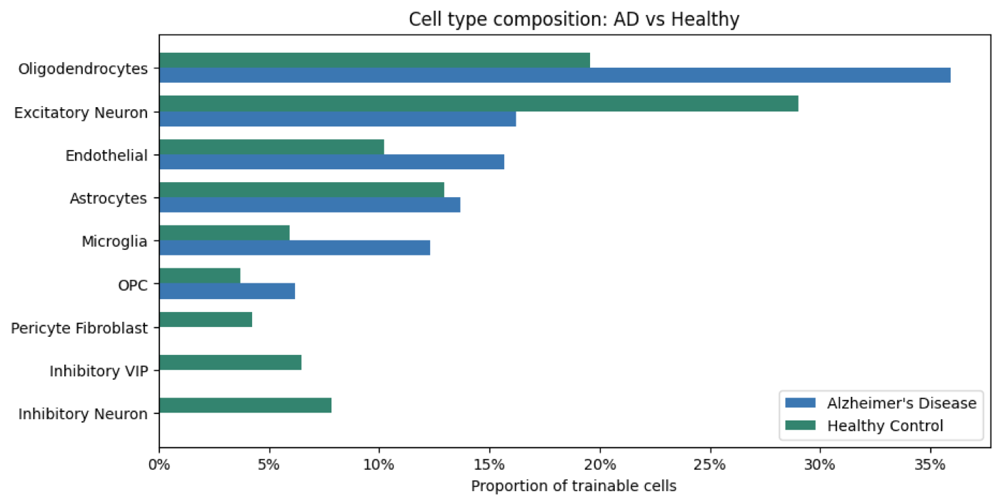
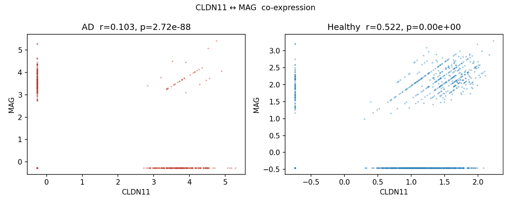
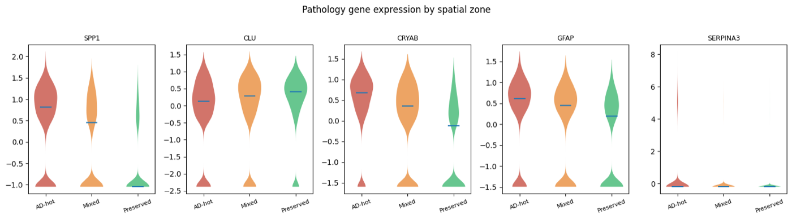
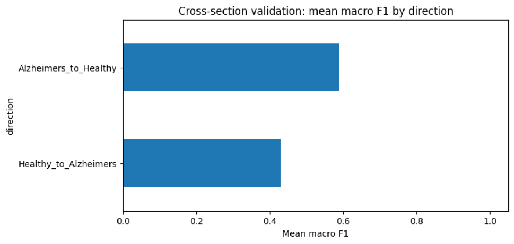
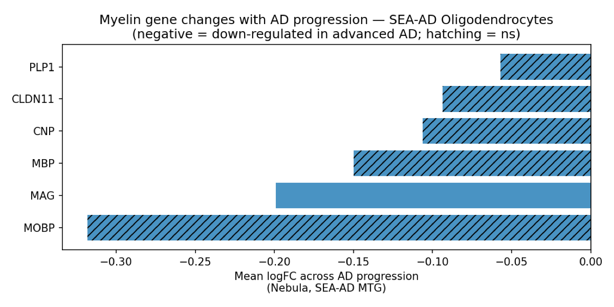
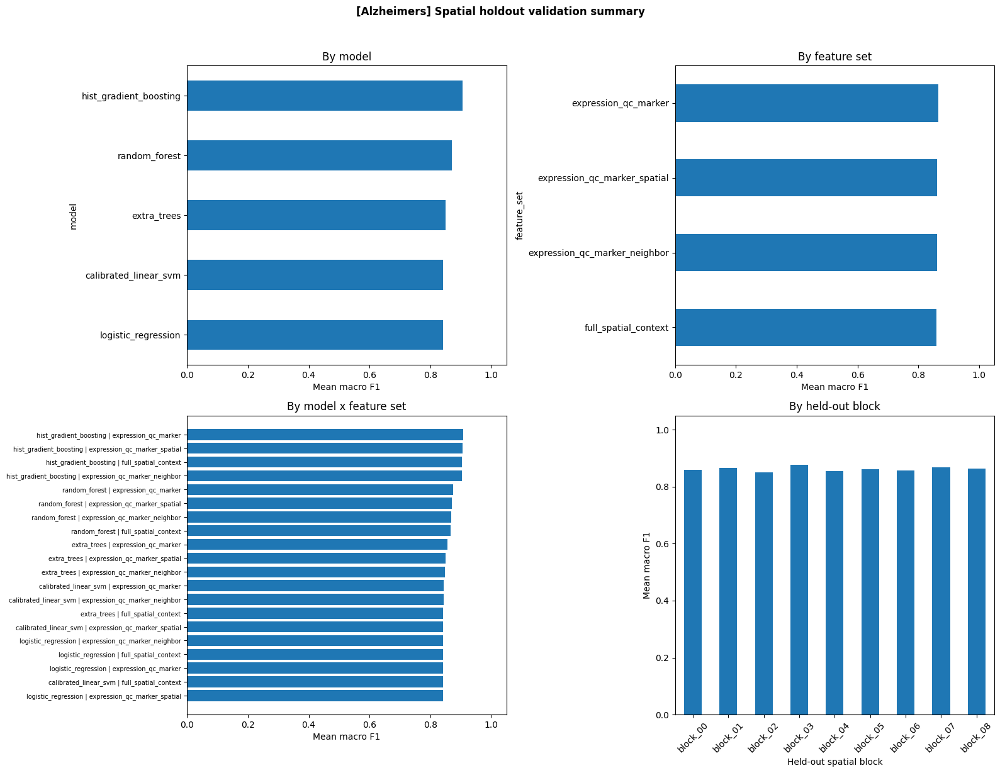
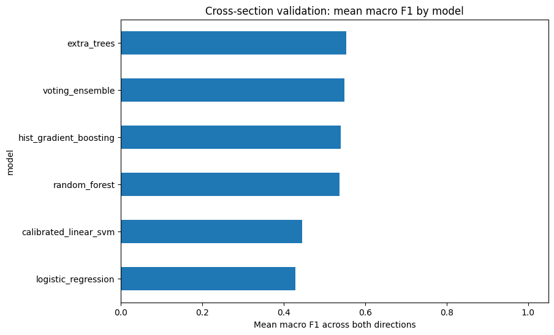

Independent research project · 2026
Spatial transcriptomics of human Alzheimer's cortex
Introduction
The problem
Alzheimer's disease does not damage the brain evenly. Some cell populations and regions fail early while their neighbours hold on for years, and why is still not understood.
The approach
Spatial transcriptomics measures gene activity in each cell while keeping the cell in its place in the tissue. I compared one Alzheimer's section of human cortex with a matched healthy one.
The main result
The oligodendrocyte lineage, the cells that make myelin, is the dominant axis of disruption: more numerous, less mature and concentrated in the pathological zones.
The questions, set before the analysis
Composition
Which cortical cell types are present in each section, and how do their proportions shift in Alzheimer's disease?
Spatial zones
Is the pathology spread evenly, or does the tissue contain distinct affected and preserved zones?
Cell identity
Does the same cell type express its defining gene programme at the same level in both conditions, or is identity itself eroded?
Gene programmes
Do the programmes that hold together in healthy tissue, the myelin module in particular, stay coherent?
Shared or specific
Is the disease signature specific to one cell type, or a local zone effect shared by every cell type living there?
Machine learning
Can a model learn cell-type identity from expression and spatial context, and does it transfer across regions and disease state?
Data
The public 10x Genomics Xenium In Situ human brain dataset: one Alzheimer's and one matched healthy cortical section, prepared and processed the same way.
Methods
Quality control
Per-cell and per-gene filtering, with the detection gap between the two sections documented up front.
Clustering and annotation
Leiden clustering and marker-based cell-type annotation, tuned separately for each section.
Composition and identity
How cell-type proportions shift, and whether each type still expresses its defining programme.
Spatial statistics
Neighbourhood enrichment and Moran's I to test whether cell types and genes are spatially organised.
Spatial zoning
A transcriptional pathology index divides the Alzheimer's section into AD-hot and preserved zones.
Differential expression
Zone against zone, globally and within each cell type, with gene-set and transcription-factor activity.
Trajectory and noise
Pseudotime along OPC to oligodendrocyte maturation, transcriptional noise, and an integrated disruption index.
Machine learning
Cell-type classifiers tested with a random split, a spatial hold-out, and transfer between the two sections.
External validation
Core oligodendrocyte findings checked against the independent SEA-AD atlas.
Key findings
Finding 1
The oligodendrocyte lineage is the main axis of disruption
Its share of cells nearly doubles, from 19.7% in the healthy section to 36.0% in the Alzheimer's section, and it becomes far more spatially segregated from neurons.


Finding 2
The myelin programme fragments instead of simply declining
MOBP becomes the most spatially clustered gene, while CLDN11, OPALIN and CNDP1 lose their spatial structure. Myelin genes that are expressed together in healthy tissue stop moving together.


Finding 3
Pathology is spatially zoned
The Alzheimer's section divides into AD-hot zones, which are about 58% oligodendrocyte, and preserved zones, which are about 15% oligodendrocyte and more than half neuronal.

Finding 4
The zone effect is shared across cell types
SPP1, CRYAB, GFAP and MOBP are raised in AD-hot zones in all five cell types tested, so they mark a local pathological environment and not one lineage.


Finding 5
Oligodendrocyte maturation is arrested
Along the path from precursor to mature oligodendrocyte, mean pseudotime falls from 0.490 in healthy tissue to 0.075 in Alzheimer's, where oligodendrocytes barely separate from their precursors.

Finding 6
Alzheimer's tissue is harder to classify, and models transfer unevenly
Cell-type classifiers trained on the Alzheimer's section and tested on the healthy one reach a macro F1 of about 0.59; the reverse reaches about 0.43, across every model family tested.


Finding 7
The core claims replicate in an independent cohort
Reactive-glia induction, loss of myelin genes (MAG, FDR 0.019) and rising SNCA all hold in SEA-AD, an independent whole-transcriptome atlas.


Machine learning
After the cell types had been annotated, the project asked a second question:
Can supervised machine learning classify cell types from expression-derived, marker-signature, quality-control and spatial-context features, and does that transfer across tissue regions and across disease state?
Cells in the ambiguous mixed clusters were excluded from training, because there is no reliable label to score them against.
Features
- Expression-derived PCA components
- Quality-control metrics
- Spatial coordinates
- Marker signature scores
- Neighbour-averaged marker scores (Squidpy)
Models
- Logistic regression
- Calibrated linear SVM
- Random forest
- Extra trees
- Histogram gradient boosting
Random split
A stratified random split of cells within each section.
| Model | Alzheimer's macro F1 | Healthy macro F1 |
|---|---|---|
| Histogram gradient boosting | 0.9121 | 0.9445 |
| Random forest | 0.8668 | 0.9343 |
| Calibrated linear SVM | 0.8529 | 0.9335 |
| Logistic regression | 0.8480 | 0.9443 |
| Extra trees | 0.8467 | 0.9353 |
On the healthy section all five models perform within a narrow band, so the cell types are close to linearly separable. On the Alzheimer's section boosting pulls clearly ahead and logistic regression falls from joint best to among the weakest. Expression components are the most important features in both sections; spatial coordinates and neighbour features rank last.
Spatial hold-out
Each section is divided into nine spatially compact blocks, and each block is held out in turn: 5 models × 4 feature sets × 9 blocks = 180 folds per section.
| Model | Alzheimer's macro F1 | Alzheimer's accuracy | Healthy macro F1 | Healthy accuracy |
|---|---|---|---|---|
| Histogram gradient boosting | 0.9053 | 0.9235 | 0.9574 | 0.9637 |
| Random forest | 0.8702 | 0.8949 | 0.9464 | 0.9534 |
| Extra trees | 0.8492 | 0.8756 | 0.9462 | 0.9527 |
| Calibrated linear SVM | 0.8427 | 0.8745 | 0.9419 | 0.9508 |
| Logistic regression | 0.8419 | 0.8661 | 0.9494 | 0.9574 |
| Feature set (Alzheimer's section) | Included features | Macro F1 |
|---|---|---|
| expression_qc_marker | PCA + QC + marker scores | 0.8648 |
| expression_qc_marker_spatial | + spatial coordinates | 0.8622 |
| expression_qc_marker_neighbor | + neighbour marker scores | 0.8610 |
| full_spatial_context | + coordinates and neighbour scores | 0.8596 |


Holding out whole regions costs almost nothing compared with the random split (0.9121 to 0.9053 for the best model), so the classifier is learning expression identity and not memorising position. Adding spatial features does not help; it very slightly hurts.
Transfer between the two sections
The hardest test: train on one section and test on the other, with labels harmonised to six shared classes.
| Model | Mean macro F1 |
|---|---|
| Extra trees | 0.554 |
| Voting ensemble | 0.549 |
| Histogram gradient boosting | 0.539 |
| Random forest | 0.537 |
| Calibrated linear SVM | 0.445 |
| Logistic regression | 0.429 |


Performance falls from about 0.92 within a section to about 0.55 across disease state. The direction matters: training on the Alzheimer's section and testing on the healthy one reaches a macro F1 of about 0.59, while the reverse reaches about 0.43, for every model family tested. Alzheimer's tissue contains a broader range of cell states, so a model trained on it has already seen the healthy states; trained the other way, the disease states are new to it.
The practical conclusion is that transferring cell-type labels from a healthy reference to diseased tissue should not be assumed to work. This is still a comparison of two sections, so true generalisation needs more donors.
Conclusion
Taken together, the findings point one way. In this tissue the oligodendrocyte lineage is more numerous, less mature, less coherent in its myelin programme, and concentrated in the zones where pathology-associated genes are highest. The change is spatially organised and not uniform, and the most disturbed zones impose a shared signature on every cell type living in them.
The project compares one section per condition, so it cannot say how general this is or what comes first. What it does show is that the core oligodendrocyte signal survives a test against an independent atlas, and that a careful spatial analysis can separate what is robust from what is an artefact of the measurement. The next step is to repeat the analysis across more donors and across disease stages.
Limitations
Stated in the repository before any result. This is research and a portfolio project, not a clinical tool.
One tissue section per condition, so there is no biological replication.
A detection gap between sections (median 28 against 69 genes per cell) confounds direct cross-section comparisons; the analysis is built to avoid depending on them.
A targeted gene panel, not the whole transcriptome: tau (MAPT) is not measured, and the pathology index is a transcriptional proxy.
Cell types are annotated from markers, not confirmed by a pathologist.
The results are correlational; nothing here establishes cause or the order of events.